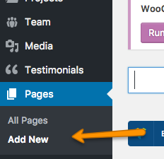
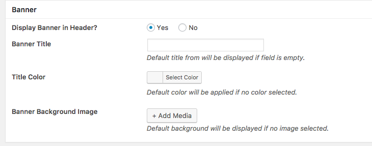
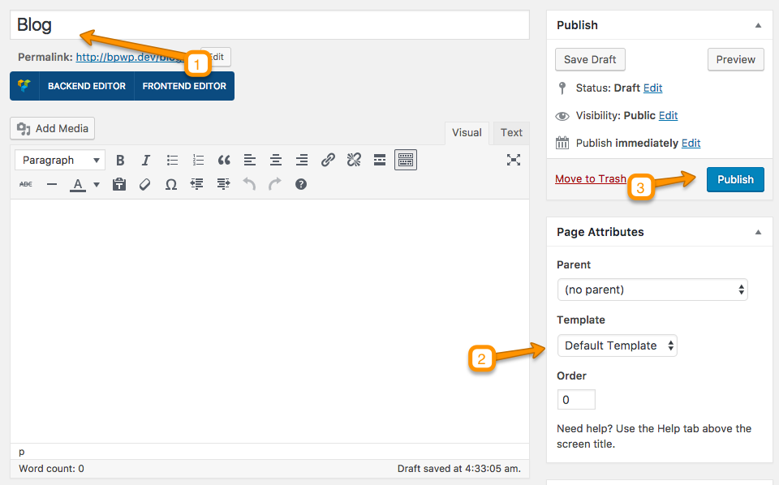
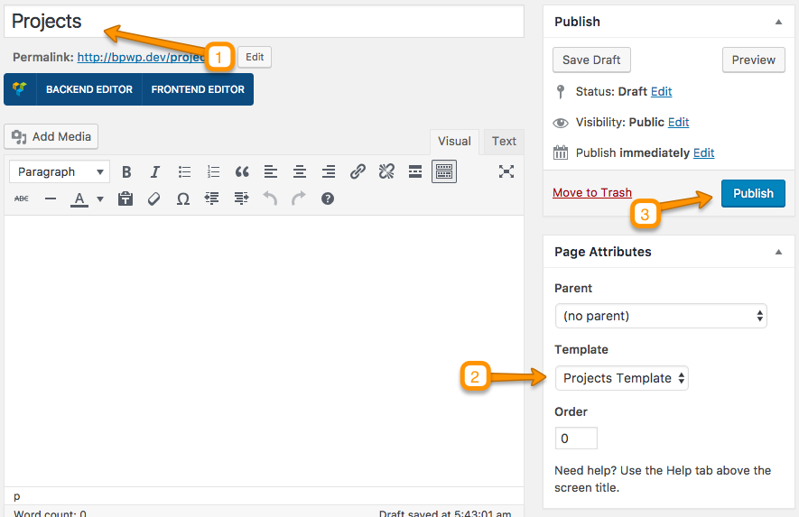
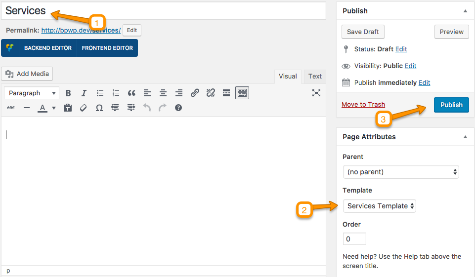
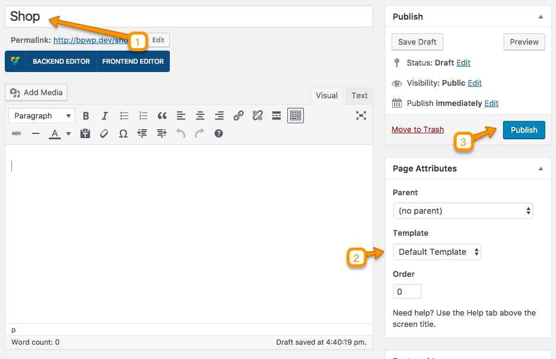
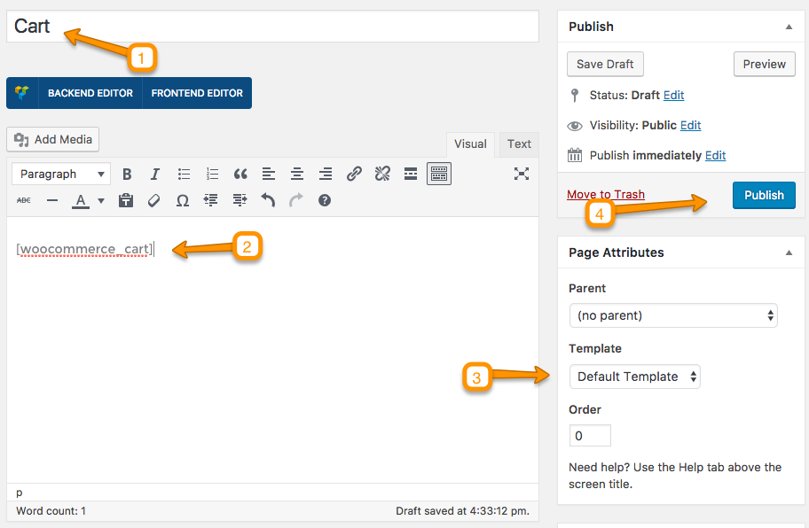
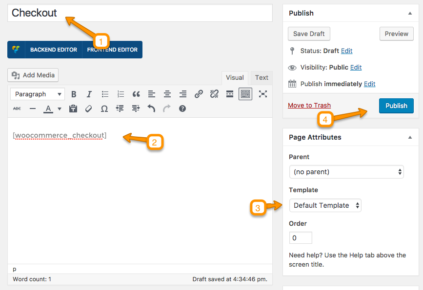
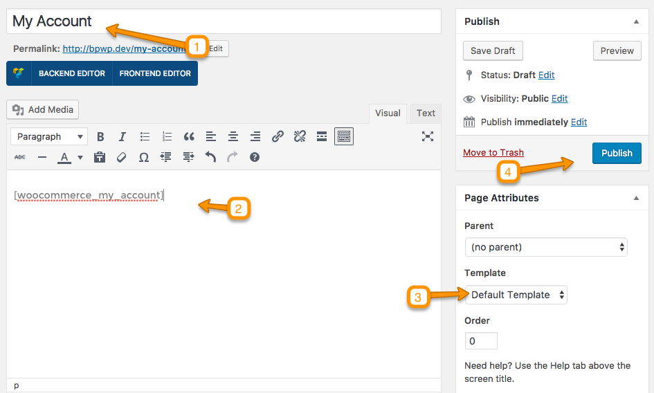

Create New Page
In case of Demo Import the initial pages are already created and you do not need to create a new page.
To create a new page go to WordPress Admin Pages > Add New. 
You will see Metabox whenever you are going to create a page. These Metaboxes values will over ride the default settings in Customizer related to banner Title, Title Color, and Background Iamge. You can also disbale the banner in header. 
Blog Page
You can give this page a title "Blog" yet you do not need to include any contents. Select the “Default Template” as template from the Page Attributes section, as displayed in screen shot below and click “Publish”. 
After that consult Basic Setup > Configure Read Settings in this documentation to configure it as Posts Page.
Portfolio/Projects Page
You can give this page a title "Projects" yet you do not need to include any contents. Select the “Projects Template” as template from the Page Attributes section, as displayed in screen shot below and click “Publish”. 
Services Page
You can give this page a title "Services" yet you do not need to include any contents. Select the “Services Template” as template from the Page Attributes section, as displayed in screen shot below and click “Publish”. 
WooCommerce - Shop Page
You can give this page a title "Shop" yet you do not need to include any contents. Select the “Default Template” as template from the Page Attributes section, as displayed in screen shot below and click “Publish”.

WooCommerce - Cart Page
You can give this page a title "Cart" and add Shortcode [woocommerce_cart] in content area. Select the “Default Template” as template from the Page Attributes section, as displayed in screen shot below and click “Publish”.

WooCommerce - Checkout Page
You can give this page a title "Checkout" and add Shortcode [woocommerce_checkout] in content area. Select the “Default Template” as template from the Page Attributes section, as displayed in screen shot below and click “Publish”.

WooCommerce - My Account Page
You can give this page a title "My Account" and add Shortcode [woocommerce_my_account] in content area. Select the “Default Template” as template from the Page Attributes section, as displayed in screen shot below and click “Publish”.

For complete documentation of creating WooCommerce pages you can consult here.